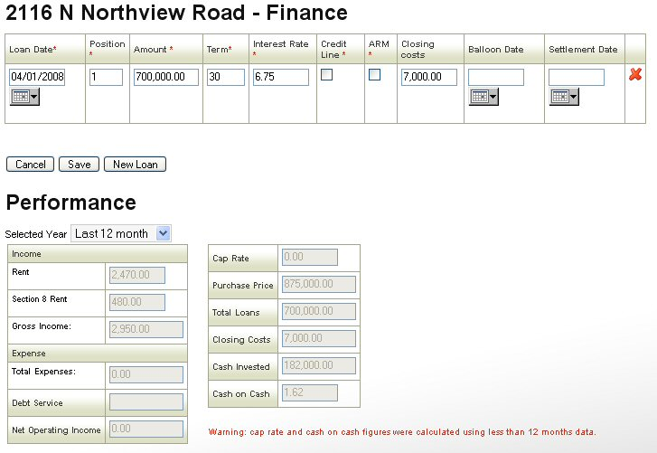

The Finance screen is for owners. Records all the loans on a given property. Fields with a red asterisk are mandatory. The “loan date” is the date a particular loan starts. The position details whether it is 1st or secondary. If it is a “line of credit” mark the credit line box, also record whether it has an adjustable rate. “Amortization start” is when the principal starts to be paid off. Balloon date is the date the principal and accumulated interest to due to pay the loan off. “settlement date” is the date the loan is due to be paid off for example 30 years from the loan date if it is a conventional 30 year mortgage.
Previous - Property Details Next - Property ExpensesCopyright Visulate LLC 2007